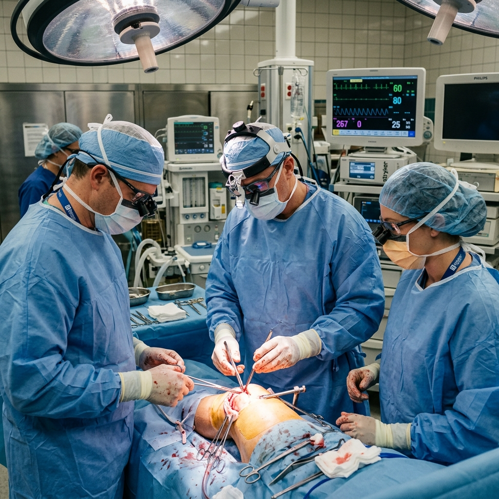

Traumatología y Cirugía Ortopédica
Servicio principalDiagnóstico y tratamiento especializado para lesiones óseas, articulares y musculares, con un enfoque personalizado para recuperar tu movilidad y calidad de vida.
👉 Valoración previa requerida
Centro de Traumatología y Regeneración Celular
No permitas que una lesión detenga tu ritmo de vida. En el Centro de Traumatología y Regeneración Celular, usamos tecnología avanzada para recuperar tu movilidad sin cirugías innecesarias.
Especialistas en traumatología y ortopedia en Martínez de la Torre. Tratamos la raíz de tu dolor para que vuelvas a disfrutar de lo que más amas.
Entendemos la frustración de vivir con limitaciones físicas. Por eso, diseñamos un camino claro hacia tu recuperación, integrando lo último en medicina regenerativa con un trato cálido y humano.
Evaluaciones precisas para identificar el origen del problema y definir el plan más adecuado.
Cada plan se diseña en función de las necesidades y condición específica de cada paciente.
Terapias modernas para apoyar la recuperación biológica y mejorar la función musculoesquelética.
Acompañamiento directo del Dr. Almendra durante todo el proceso para asegurar los mejores resultados.

Compasión, Precisión y Alta Especialidad Médica
El Dr. Raúl Almendra Montoya cuenta con 12 años de experiencia en el diagnóstico y
tratamiento de lesiones musculoesqueléticas, padecimientos articulares, secuelas traumáticas, heridas
complejas y estrategias terapéuticas orientadas a la regeneración y recuperación funcional del
paciente.
Su práctica médica integra áreas de alta especialidad como rescate óseo y articular,
cuidado avanzado de heridas y ortopedia regenerativa, permitiendo ofrecer una atención más completa, precisa
y personalizada.
Certificaciones y membresías
Atención médica integral para diagnóstico, tratamiento, rehabilitación y recuperación funcional.
Diagnóstico y tratamiento especializado para lesiones óseas, articulares y musculares, con un enfoque personalizado para recuperar tu movilidad y calidad de vida.
👉 Valoración previa requerida
.png)
Tratamientos orientados a apoyar la recuperación natural de los tejidos, disminuir el dolor y mejorar la función articular.
👉 Valoración previa requerida

Programas personalizados para recuperar movilidad, fuerza y estabilidad, facilitando una mejor recuperación funcional.
👉 Valoración previa requerida

Manejo especializado de heridas complejas o de difícil cicatrización, enfocado en acelerar la recuperación y reducir riesgos de complicaciones.
👉 Valoración previa requerida

Atención avanzada para preservar la función de huesos y articulaciones en casos complejos, ayudando a evitar el deterioro y mejorar la movilidad.
👉 Valoración previa requerida

Enfoque complementario que favorece los procesos de recuperación del cuerpo, apoyando la función y bienestar del paciente.
👉 Valoración previa requerida

Alternativas terapéuticas modernas integradas a un enfoque regenerativo, siempre indicadas bajo valoración médica especializada.
👉 Valoración previa requerida

Procedimientos guiados por ultrasonido que permiten mayor precisión en el diagnóstico y tratamiento, mejorando la seguridad y efectividad.
👉 Valoración previa requerida

Terapias complementarias que pueden integrarse al tratamiento para apoyar la recuperación y mejorar el estado general del paciente.
👉 Valoración previa requerida

Acompañamiento nutricional enfocado en optimizar el funcionamiento del organismo como parte de un tratamiento integral.
👉 Valoración previa requerida

Terapia complementaria que favorece la oxigenación del cuerpo, apoyando procesos de recuperación, rehabilitación y cicatrización.
👉 Valoración previa requerida
Recibe una valoración médica y te orientamos hacia la mejor opción para tu caso.
👉 Agendar valoración¿Has probado de todo y el dolor persiste? Identificamos el origen exacto de tu molestia para detener el desgaste y devolverte tu independencia física.
👉 Identifica tu caso y recibe el tratamiento adecuado desde una valoración médica especializada. DOLOR ARTICULAR Y MUSCULAR
DOLOR ARTICULAR Y MUSCULAR
 TRAUMATOLOGÍA Y FRACTURAS
TRAUMATOLOGÍA Y FRACTURAS
 REHABILITACIÓN Y RECUPERACIÓN FUNCIONAL
REHABILITACIÓN Y RECUPERACIÓN FUNCIONAL
👉 Una valoración a tiempo puede ayudarte a evitar complicaciones y acelerar tu recuperación.
El Dr. Raúl Almendra Montoya atiende padecimientos relacionados con el sistema musculoesquelético, como dolor articular y muscular, lesiones deportivas, fracturas y secuelas de fractura, desgaste articular, problemas de rodilla, hombro, cadera y tobillo, tendinitis, procesos inflamatorios, osteomielitis, heridas complejas o de difícil cicatrización, así como casos que requieren rehabilitación física integral o seguimiento postoperatorio.
Se recomienda acudir a valoración cuando presentas dolor persistente, inflamación, limitación para moverte, molestias articulares frecuentes, lesiones por deporte, secuelas de una fractura, heridas que tardan en cicatrizar o molestias que interfieren con tus actividades diarias. Una valoración oportuna permite identificar el origen del problema y definir el tratamiento más adecuado para tu caso.
La ortopedia regenerativa es un enfoque médico orientado a apoyar la recuperación y reparación de tejidos del sistema musculoesquelético mediante terapias complementarias y tratamientos personalizados. Su objetivo es mejorar la función, disminuir el dolor y favorecer la recuperación del paciente, siempre con base en una valoración médica previa.
Sí, la terapia hiperbárica es un tratamiento médico seguro y generalmente bien tolerado cuando se realiza bajo valoración y supervisión profesional. En algunos casos pueden presentarse molestias leves y temporales, como sensación de presión en los oídos durante los cambios de presión. Antes de iniciar, se realiza una valoración médica para determinar si este tratamiento es adecuado para el paciente.
Sí, en muchos casos estos tratamientos pueden combinarse como parte de un enfoque integral. La fisioterapia, la rehabilitación, la terapia hiperbárica y otros tratamientos ortopédicos o regenerativos pueden complementarse entre sí, siempre que exista una valoración médica previa.
Puedes agendar tu consulta a través del botón de contacto, WhatsApp o formulario en la página. Durante la valoración inicial se revisará tu caso, síntomas, antecedentes y estudios previos para definir el plan de atención más adecuado.
Conoce el tratamiento más adecuado para tu caso con atención médica especializada, integral y personalizada.